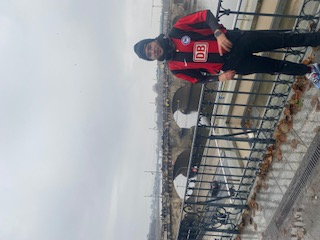
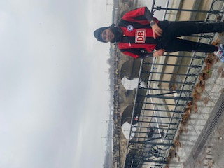
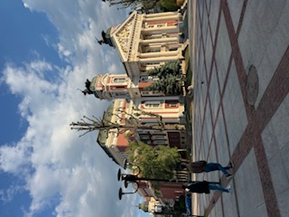
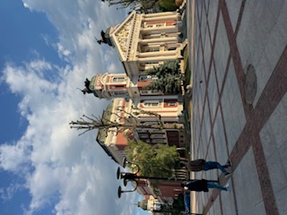
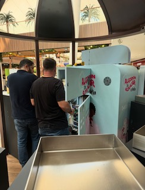
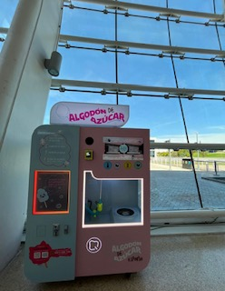

“I never was what I couldn’t be, and maybe I’m only what I’ve been able to.”
📠Academic Background
- Double Degree in Economics and Public Management — Universidad Complutense de Madrid (2019–2025)
- Exchange Program — Freie Universität Berlin (2023–2024)
- Focus: Econometric models, Public Economics, Green AI

 

📊 Research Experience
- Development of Eco‑RETINA as a tool for analyzing regulated housing markets.
- Research collaborator in the RETINA group, under the guidance of Teodosio Pérez Amaral.
- Final thesis defense awarded with 9.5/10, nominated for honors distinction.
💼 Professional Experience
- Currently working as a Customer Service and Business Administration Specialist at TESY LTD.
- I work daily with an excellent team. I contribute and grow as a specialist in this role.
- Active participation in forums on innovation, ethical AI, and science communication.
 

🚀 Entrepreneurship
During my university years, I founded and ran a cotton candy machine business, expanding from 2 to over 11 machines across strategic shopping malls in Madrid, Barcelona, and A Coruña.
- Full business planning: acquisition, licensing, installation, and maintenance.
- Revenue management, logistics, and commercial relations with malls.
- Supervised national scaling and reinvestment strategy.

